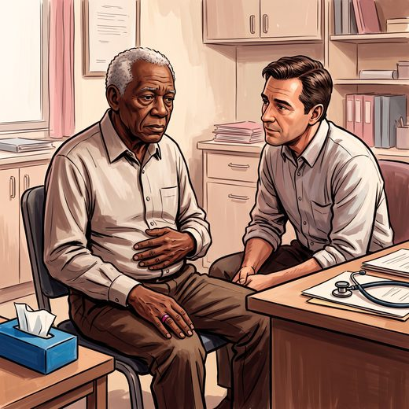

Consulta rápida à beira do leito
Condutas, doses e interações.
Referências da aula · 8
- Yesavage JA, Brink TL, Rose TL, et al. Development and validation of a geriatric depression screening scale: a preliminary report. J Psychiatr Res. 1982-1983;17(1):37-49. PMID 7183759.PubMed
- Almeida OP, Almeida SA. Confiabilidade da versão brasileira da Escala de Depressão em Geriatria (GDS) versão reduzida. Arq Neuropsiquiatr. 1999;57(2B):421-6. PMID 10450349.PubMed
- Luoma JB, Martin CE, Pearson JL. Contact with mental health and primary care providers before suicide: a review of the evidence. Am J Psychiatry. 2002;159(6):909-16. PMID 12042175. doi:10.1176/appi.ajp.159.6.909.PubMedDOI
- Dazzi T, Gribble R, Wessely S, Fear NT. Does asking about suicide and related behaviours induce suicidal ideation? What is the evidence? Psychol Med. 2014;44(16):3361-3. PMID 24998511.PubMed
- Holt-Lunstad J, Smith TB, Baker M, Harris T, Stephenson D. Loneliness and social isolation as risk factors for mortality: a meta-analytic review. Perspect Psychol Sci. 2015;10(2):227-37. PMID 25910392.PubMed
- American Psychiatric Association. Diagnostic and Statistical Manual of Mental Disorders, Fifth Edition, Text Revision (DSM-5-TR). Washington, DC: APA; 2022.
- Freitas EV, Py L, organizadores. Tratado de Geriatria e Gerontologia. 5ª ed. Rio de Janeiro: Guanabara Koogan; 2022.
- Linhares Junior JD. Casos clínicos ilustrativos construídos para as aulas, a partir da prática clínica geriátrica. In: Pós-graduação em Geriatria 2.0. Afya; 2026.
Documentos oficiais
Leis e publicações do Ministério da Saúde sobre o cuidado da pessoa idosa, de acesso livre.
Abrir os documentos